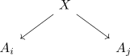
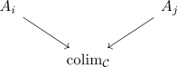
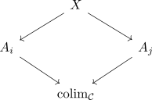
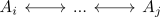
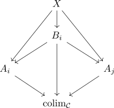
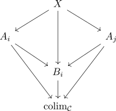
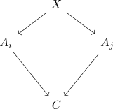
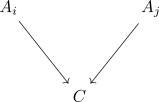
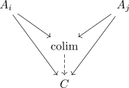
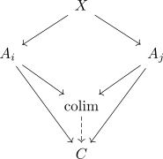

forgetful functor from the coslice category preserves connected colimits
Proposition
Let $\mathcal{C}$ be a (sufficiently) cocomplete category, $X \in \mathcal{C}$ an object and $X \ \mathcal{C}$ the coslice category Then the forgetful functor from the coslice category preserves connected colimit.
Proof
Let

be a (snapshot) of a diagram
Then let

be the colimit in $\mathcal{C}$
coprojections
Let

be a diagram. It remains to show that the coprojections are compatible with $X \rightarrow A_i$, i.e.
By assumption our diagram is connected, i.e. for each $A_i,A_j$ there exists a finite zigzag

By induction, it suffices to treat the following two cases


Note that the upper triangles commute as we have a diagram in $X / \mathcal{C}$ and the lower triangles commute as $\mathrm{colim}_{\mathcal{C}}$ is a colimit
unique
Suppose there exists a natural transformation

Then by virtue of

this induces a unique morphism

Furthermore as our coprojections are compatible with morphisms out of $X$ this results in a commutative diagram

see also: